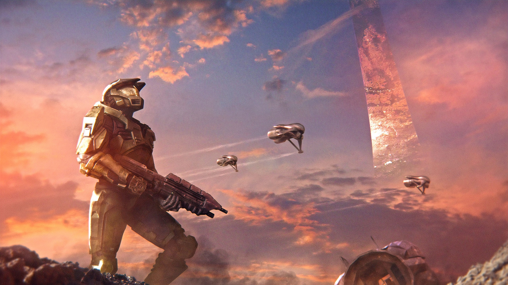

Master Chief, also known by his real name John, is the central character in the Halo franchise, created by Bungie (later managed by 343 Industries). He is a Spartan-II, a genetically enhanced super soldier, and one of humanity's greatest defenders against alien threats. His story is one of sacrifice, loyalty, and unyielding courage, making him one of the most iconic characters in gaming history. Early Life and the Spartan-II Program: Born as John on the human colony Eridanus II in 2511, Master Chief was taken at the age of 6 by the UNSC (United Nations Space Command) to become part of the secret Spartan-II program. The program was initiated by Dr. Catherine Halsey to create super soldiers who could help combat insurrections and the growing threat of alien forces (later, the Covenant). As a child, John underwent genetic, biological, and cybernetic augmentations that turned him into a near-perfect soldier. These procedures were extremely dangerous, and many of the original Spartan-II candidates did not survive.
Master Chief or John-117, is widely regarded as one of the greatest video game characters due to his exceptional physical abilities, unwavering leadership, and indomitable will. As a Spartan-II super soldier, he possesses enhanced strength, speed, and reflexes, making him a formidable force on the battlefield. His combat skills are unmatched, and his tactical genius allows him to lead humanity’s defense against alien threats like the Covenant and Flood. Despite his stoic exterior, Master Chief's sense of duty and deep moral compass drive him to protect humanity at any cost, even if it means sacrificing himself. His iconic Mjolnir Armor further amplifies his abilities, symbolizing both his strength and resilience. What truly sets Master Chief apart, however, is his unwavering dedication to the mission, his loyalty to his AI companion Cortana, and his ability to inspire hope in others, making him not just a hero, but the embodiment of perseverance and sacrifice.

In the distant future, humanity had spread across the stars but peace was shattered when a fanatical alien alliance known as the Covenant declared humans an affront to their gods. With fleets of warships and soldiers fanatical in faith, they began to wipe out human colonies, one by one. Humanity's survival hung by a thread until he arrived. A lone warrior, clad in green armor, face hidden behind a gold visor. His name was Master Chief Petty Officer John-117, a Spartan super soldier bred for war. Where others fell, he stood. Where armies broke, he advanced. The Covenant gave him a name: "Demon". They believed he was a cursed soul, a ghost wrapped in metal, sent to defy the will of their gods. Every time they tried to kill him, he survived. He turned their victories to ashes. To them, he wasn’t just a man, he was an unstoppable force. But Master Chief didn’t fight out of hatred. He fought to protect. Every soldier he saved, every city he defended, every battle he won it was for the survival of humankind. Then, deep beneath a ring-shaped world called Halo, he found something worse "The Flood". A parasitic horror that consumed everything humans, aliens, all life. The Covenant worshipped Halo as a holy relic, but they were wrong, it wasn’t salvation. It was a weapon built to stop the Flood by wiping out all sentient life. Master Chief made a choice destroy Halo before the Covenant could use it, and stop the Flood from escaping. So he fought on two fronts against the Covenant, who saw him as a demon, and the Flood, who felt nothing at all. He wasn’t just saving Earth he was saving the galaxy and through it all, he remained silent, focused, relentless. To humanity, he was something else entirely. A hero.
Master Chief's Life Halo Franchise History